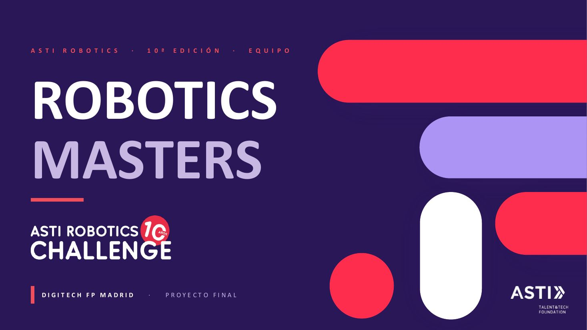
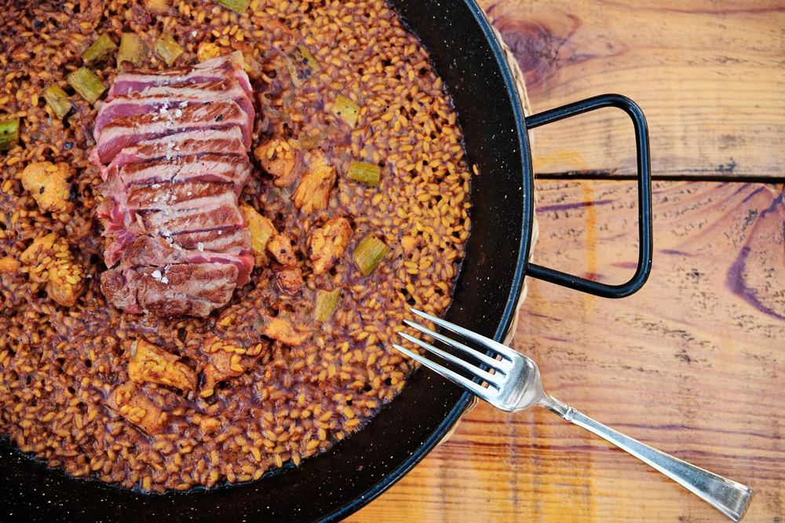

Booting HUGO-R1 …
Interfaces: redes · sistemas · bases de datos [ OK ]
%LINK-3-UPDOWN: Interface Gi0/0, changed state to up
Hugo GonzálezGarcía
Administración de SistemasRedesBases de datos
Estudiante de ASIR en Madrid. Configuro redes Cisco, administro Windows Server y Linux, y diseño bases de datos que se mantienen solas. Fui finalista del ASTI Robotics Challenge 2026 con mi equipo.
Me gusta entender cómo funciona lo que hay detrás.
Estudio el Grado Superior en Administración de Sistemas Informáticos en Red en Digitech FP Madrid. Lo que más me engancha son las redes, los sistemas y las bases de datos: montar algo, romperlo en el laboratorio y volver a dejarlo funcionando.
Soy responsable, aprendo rápido y me adapto bien a entornos nuevos. En el ASTI Robotics Challenge pasé siete meses con mi equipo diseñando, programando y ajustando un robot hasta llegar a la final, y ahí aprendí tanto de trabajo en equipo como de técnica.
Ahora busco mi primera experiencia en una empresa para aplicar todo esto en sistemas reales.
Trabajo en equipoComunicaciónAutonomíaLiderazgo
HUGO-R1# show version
HUGO-R1#show version
Hugo González García, versión ASIR 2.º curso
Compilado en Digitech FP Madrid (2025 – 2027)
HUGO-R1 uptime is —
System image file is "bachillerato-ciencias.bin"
(Colegio Paula Frassinetti, Avilés · 2019 – 2021)
Idiomas : Inglés B1
Ubicación : Madrid
Carnet : B
Logros : Finalista ASTI Robotics Challenge 2026
Interfaces : redes, sistemas, bases de datos, web
Estado : disponible para prácticas
VLAN 2010.0.20.0/24 · habilidades
show interfaces status
Cada área es una interfaz. La señal indica el nivel con el que trabajo hoy en ella.
Puerto
Área
Lo que sé hacer
Señal
Estado
Señal: autoevaluación sobre 5connected = lo uso con soltura en clase y proyectos
VLAN 3010.0.30.0/24 · proyectos
Proyectos
Lo que he construido en clase y en competición. Todos se pueden abrir.

Finalista 2026
Gi0/1 · up/up · robótica · en equipo
Robotics Masters
Robot para la 10.ª edición del ASTI Robotics Challenge. Lo diseñamos en 3D con Blender sobre un chasis Osoyoo Mega2560 con ruedas mecanum, que le permiten moverse en cualquier dirección.
Se controla con un mando de Xbox: un script en Python lee el mando y envía órdenes por WiFi mediante UDP al Arduino, con parada de emergencia y reconexión automática. Cada prueba tiene además su modo automático. Para el reto «Automatiza el futuro» le añadimos una pala frontal impresa en 3D que transporta palés.
8pruebas
7meses
174,81 €de 250 € gastados
ArduinoPythonPygameUDPBlenderSensores IR / ultrasonidos

Proyecto final
Gi0/2 · up/up · desarrollo web
La Casa Antigua 1899
Web completa para un restaurante ficticio, sin frameworks. Tiene carrusel automático y manual, menú desplegable, reloj 12/24 h, aviso de cookies y tres formularios con validación propia en JavaScript. Funciona en móvil, tableta y escritorio.
-- Bloquea pedidos sin stock suficienteCREATE TRIGGER comprobar_stock
BEFORE INSERT ON detalle_pedidos
FOR EACH ROWBEGINDECLARE stock_actual INT;
SELECT stock INTO stock_actual
FROM productos
WHERE id_producto = NEW.id_producto;
IF stock_actual < NEW.cantidad THENSIGNAL SQLSTATE'45000'SET MESSAGE_TEXT = 'Stock insuficiente';
END IF;
END $
Gi0/3 · up/up · bases de datos
Triggers para una tienda
Práctica final de bases de datos en MySQL. Diez triggers que mantienen solos la coherencia de los pedidos: copian precios, calculan subtotales y totales, descuentan y devuelven stock, bloquean ventas sin existencias y dejan registro de los cambios.
10triggers
3tablas de registro
MySQLTriggersSIGNALAuditoría
Gi0/4 · up/up · redes
Proyecto final de redes
Ejercicio final de repaso de 1.º de ASIR en Cisco Packet Tracer. Diseño de la topología, direccionamiento y configuración de routers y switches Cisco desde la línea de comandos.
Packet TracerCisco IOSSubnettingEnrutamiento
Gi0/5 · up/up · sistemas
Laboratorio de sistemas
Prácticas de clase con máquinas virtuales en VirtualBox y VMware: dominio con Active Directory en Windows Server (usuarios, grupos y permisos), y servidores Linux con DHCP, DNS y web.
Windows ServerActive DirectoryLinuxVirtualBoxVMware
VLAN 4010.0.40.0/24 · trayectoria
traceroute futuro
El camino hasta aquí, salto a salto. El último todavía no responde.
HUGO-R1# traceroute futuro.empresa.es
12019 – 2021
Bachillerato de Ciencias
Colegio Paula Frassinetti · Avilés
22025 – 2027
Grado Superior en ASIR
Digitech FP · Madrid
Redes Cisco, Windows Server, Linux, bases de datos MySQL y Oracle, y desarrollo web.
3nov 2025 – may 2026
Finalista del ASTI Robotics Challenge
10.ª edición · equipo Robotics Masters
Siete meses de diseño 3D, montaje, programación y pruebas en pista hasta la final.
4may 2026
Cierre de 1.º de ASIR
Proyectos finales
Web del restaurante, triggers en MySQL y proyecto final de redes en Packet Tracer.
52026
Ciberseguridad con Cisco Networking Academy
Formación complementaria
Introducción a la Ciberseguridad (completado) y Fundamentos de Ciberseguridad (en curso).
6* * *
Prácticas en empresa
Request timed out.
Este salto está esperando respuesta. Si tu empresa busca alguien para sistemas o redes, puede ser el siguiente.
Todo el portfolio también se puede recorrer desde aquí. Escribe help o pulsa un comando. Funciona el tabulador para autocompletar y las flechas para el historial.
ssh invitado@hugo-r1
VLAN 6010.0.60.0/24 · ayuda
¿Te ayudo con el ordenador o el móvil?
Mientras estudio, ayudo de forma voluntaria y sin coste a quien lo necesite: personas mayores, sus familias, particulares y pequeños negocios. Por teléfono, por videollamada o conectándome a tu ordenador.
Móvil y tablet
WhatsApp y videollamadas con la familia
Fotos: verlas, enviarlas y guardarlas
Letra más grande y móvil más fácil
Instalar y usar aplicaciones
Configurar un móvil nuevo
Ordenador
Que vaya más rápido
Wifi, impresora y actualizaciones
Instalar y configurar programas
Copias de seguridad de tus archivos
Ajustes para verlo y usarlo mejor
Word y Office
Escribir y dar formato a documentos
Cartas, escritos y currículums
Excel básico: listas y cuentas
Guardar en PDF e imprimir
Correo electrónico y adjuntos
Seguridad y estafas
Revisar si un SMS, correo o WhatsApp es un timo
Contraseñas seguras y fáciles de recordar
Antivirus y protección del equipo
Qué hacer si has caído en una estafa
Aprender a usar la IA
Qué son ChatGPT, Gemini o Copilot y para qué sirven
Cómo preguntarle para que te entienda
Usarla para escribir un correo, resumir una carta o planear un viaje
Qué no contarle y cómo comprobar lo que dice
Clases sencillas por videollamada, a tu ritmo.
¿Tienes un pequeño negocio? También te echo una mano con los ordenadores, el wifi, la impresora o el correo de tu tienda o despacho.
Cómo funciona
Me escribes o me llamas y me cuentas qué te pasa. No hace falta saber explicarlo con palabras técnicas.
Quedamos un momento por teléfono o videollamada. Si hace falta, me conecto a tu ordenador con AnyDesk: te explico paso a paso cómo instalarlo.
Lo resolvemos juntos y te explico cómo hacerlo tú la próxima vez.
No tengo horario fijo: escríbeme y te digo cuándo puedo atenderte.
Tu seguridad, lo primero
Solo me conecto a tu ordenador si tú me has pedido ayuda antes. Nunca te pediré contraseñas del banco, códigos que te lleguen por SMS ni dinero. Si alguien te llama diciendo que es «del servicio técnico» sin que tú lo hayas pedido, cuelga: es un timo.
¿Te echo una mano?
Escríbeme por WhatsApp o déjame tus datos y te llamo yo.
¿Buscas a alguien para prácticas o un puesto junior en sistemas, redes o soporte? ¿O necesitas ayuda con el ordenador o el móvil? Escríbeme por donde te venga mejor.